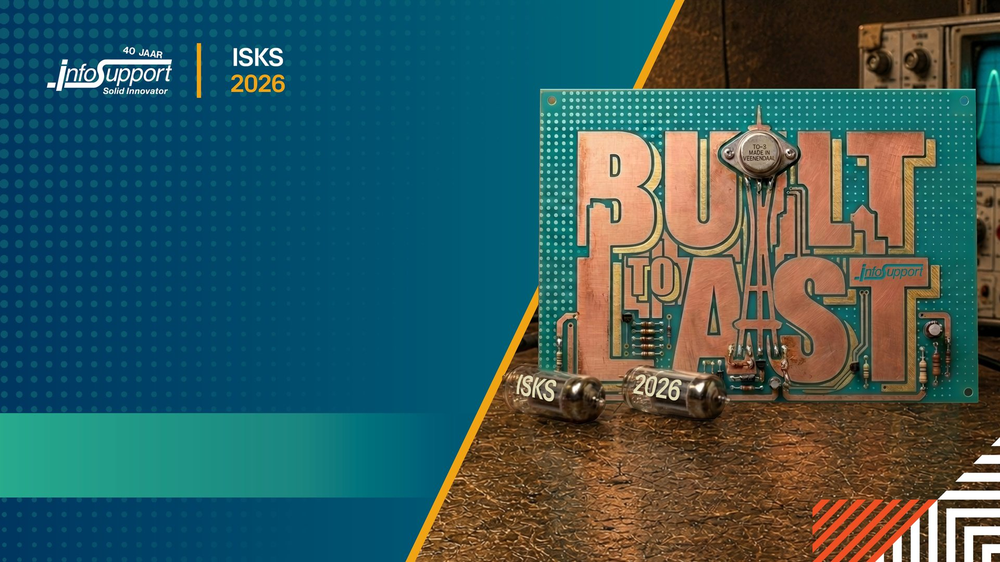

Why build it yourself?
- A transformer is roughly six operations in a loop.
- Every one of them fits on a slide.
- The mystery is in the weights, not the code.


Inference from first principles, in C#

No raster, no SVG filter. One gradient plus two dot layers.

55pt hero — title slide
40pt title — section heading
24pt subtitle — amber
20pt body — default content copy
18pt dense body — two column and cards